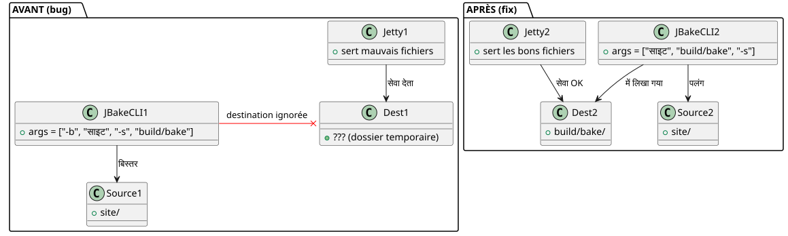

क्यों `serve` एक बदसूरत साइट दिखा रहा था जबकि `publishSite` सही था?
प्रकाशित: 22 April 2026
क्या आपको ऐसा क्षण याद है जब आपकी स्थानीय साइट कुछ भी नहीं दिखती, पर जब इसे ऑनलाइन तैनात किया जाता है तो सब कुछ ठीक हो जाता है? ये वही बात मेरे Gradle JBake प्लगइन के साथ हुई। कार्य`serve`वर्गाकार बटन दिखा रहा था, काली पृष्ठभूमि पर गहरा टेक्स्ट और अजीब तरह से अनुपस्थित सीएसएस। फिर भी`publishSite`वह वही साइट उत्पन्न कर रहा था—वह स्वयं निर्दोष। दोषी न तो CSS था, न ही ब्राउज़र, न ही कैश। यह कोटलिन कोड की एक पंक्ति थी — और कमांड‑लाइन आर्ग्युमेंट्स के साथ एक बुरी आदत।
दृश्य: चार स्क्रीनशॉट्स, दो रेंडर्स
यह सिस्टम क्रैश के बाद था। मैंने चार स्क्रीनशॉट लिए थे ताकि स्थानीय रेंडरिंग की तुलना कर सकूँ। (./gradlew serve`पर`localhost:8820) के साथ रेंडर ऑनलाइन (`publishSite`पर GitHub Pages)। प्रत्येक पृष्ठ के दो स्क्रीनशॉट: शीर्ष और तल।
स्थानीय रेंडर
पृष्ठ का शीर्ष— बटन Project और Template हैंछोटे, आयताकार, मानक रंगों (नीला और हरा)। कार्ड Start Writing में एकएक समान काला पृष्ठभूमि, फ्रेम के बिना.

पृष्ठ के नीचे— उपशीर्षक \"नवीनतम लेख और संसाधन\" हैलगभग पढ़ने योग्य नहीं, काला पृष्ठभूमि पर बहुत गहरा। ब्लॉग चित्रों के नीचे तारीखें ("17 अक्टूबर 2013", आदि) हैंअनुपस्थित।

ऑनलाइन रेंडरिंग
पृष्ठ का शीर्ष— वही बटन हैंबड़े, भेड़, चमकदार नीयॉन हरा, बड़े अक्षरों में पाठ। कार्ड में एकसफ़ेद गोलाकार फ्रेम जिसमें ड्रॉप शैडो है.

पादलेख— उपशीर्षक हैबहुत पठनीय. तारीखें हैंदृश्य. लेखों के कार्ड रखते हैंगोल कोनेऔर शीर्षक हैंमोटा.

पहला प्रतिक्रिया : विषय। मैं एक गतिशील थीम सिस्टम (clair, sombre, high-contrast) का उपयोग करता हूँ, जो आधारित है`localStorage`. शायद स्थानीय स्टोर हाई-कंट्रास्ट थीम ट्रिगर कर रहा था? नहीं। मैंने पहले ही लिख दिया थाhttps://cheroliv.com/blog/2025/0098_preloading_css_variable_post.html[थीम के प्रीलोडिंग पर एक पूरा लेख], मैं जानता हूँ कि यह कैसे काम करता है। और फिर, भले ही हाई‑कंट्रास्ट मोड हो, CSS संरचना (अंडाकार बटन, छायाएँ) वहां होनी चाहिए थी। वह नहीं थी।
दूसरा रिफ्लेक्स : ब्राउज़र कैश। नहीं, मैंने साफ़ प्रोफ़ाइल के साथ परीक्षण किया था। अंतर बना रहा।
तीसरी प्रतिक्रिया :`serve`उसी फ़ाइलों को परोस नहीं रहा था`publishSite`.
निदान: serve सही फ़ोल्डर की ओर इशारा नहीं कर रहा था
मेरा Gradle प्लगइन`bakery`इसके दो मुख्य कार्य हैं:
-
bake`स्थिर साइट उत्पन्न करता है`build/bake/ -
`serve`एक स्थानीय वेब सर्वर लॉन्च करता है
-
publishSite: धकेल`build/bake/`GitHub Pages की ओर
असहमति केवल से आ सकती थी`serve`. Si publishSite`वह सही सामग्री प्रकाशित कर रहा था, इसका मतलब यह है कि`build/bake/`था अच्छा. यदि`serve`अन्य चीज़ दिखा रहा था, क्योंकि यह काम नहीं कर रहा था`build/bake/.
आइए कोड देखते हैं। में`SiteManager.kt`, काम`serve`इसे इस प्रकार परिभाषित किया गया है :
tasks.register("serve", JavaExec::class.java) { task ->
task.apply {
mainClass.set("org.jbake.launcher.Main")
classpath = jbakeRuntime
environment("GEM_PATH", jbakeRuntime.asPath)
jvmArgs(/* ... */)
args = listOf(
"-b", file(site.bake.srcPath).absolutePath,
"-s", layout.buildDirectory.get()
.asFile.resolve(site.bake.destDirPath)
.absolutePath
)
}
}org.jbake.launcher.Main`JBake CLI 2.7.0 का प्रवेश बिंदु है। विचार: पास करें-b`स्रोत फ़ोल्डर के लिए और`-s`लक्ष्य फ़ोल्डर के लिए, फिर सर्वर मोड लॉन्च करें। सिवाय इसके कि…
मूल कारण: JBake CLI ऐसा काम नहीं करता
JBake 2.7.0 की प्रतीक्षास्थितीय आर्गुमेंटस्रोत और गंतव्य के लिए, फिर वैकल्पिक फ़्लैग। हस्ताक्षर है:
jbake <source> <destination> [options]लेकिन मेरे कोड में, मैं लिख रहा था:
args = listOf("-b", "/path/to/site", "-s", "/path/to/build/bake")JBake इसे इस प्रकार समझ रहा था:
-
-b→ फ़्लैग "bake" (बूलीन), उपभोग किया गया -
/path/to/site→ हो जाता है आर्गुमेंट पोज़िशनल 1 (स्रोत) -
-s→ फ़्लैग "serve" (बूलियन) को पार्स करें, सर्वर प्रारम्भ हो गयातुरंत -
/path/to/build/bake→ एक अनाथ तर्क, अनदेखा या गलत रूप से व्याख्यायित
परिणाम : JBake ले रहा था`/path/to/site`जैसा स्रोत,इसे गंतव्य को ध्यान में नहीं दिया गयाप्रदान किया गया (build/bake), और उपयोग करता था उसका संग्रह डिफ़ॉल्ट रूप से ( अक्सर`./output`ya एक अस्थायी प्रतिलिपि)। फ़ाइल`css/styles.css`बिल्ड तो दबा दिया गया या अनदेखा कर दिया गया था, इसलिए एक पुराना डिफ़ॉल्ट CSS (कस्टम वेरिएबल नहीं, गोल कोने नहीं, छाया नहीं) परोसा जा रहा था।
तुलना में,bake et publishSite`उपयोग करते हैं इसेआधिकारिक Gradle JBake प्लगिन(`jbake-gradle-plugin) जो साफ़ से लिखता है में`build/bake/`Gradle API के माध्यम से। वे CLI के माध्यम से नहीं जाते।
हल: स्थिति-आधारित आर्गुमेंट्स, फ़्लैग नहीं
सुधार तात्कालिक है — एक बार समझ लेने पर। बस स्रोत और गंतव्य को स्थिति आधारित तर्क के रूप में पास करें, फिर`-s`अंत में :
args = listOf(
file(site.bake.srcPath).absolutePath,
layout.buildDirectory.get()
.asFile.resolve(site.bake.destDirPath)
.absolutePath,
"-s"
)यह सब है। तीन लाइनें बदल दी गईं, बग ठीक हो गया।
प्लगिन का स्थानीय प्रकाशन के बाद (publishToMavenLocal), un `./gradlew serve`JBake को सही सिंटैक्स के साथ शुरू करें :
jbake /home/user/project/site /home/user/project/build/bake -sऔर इस बार, JBake में एम्बेडेड Jetty सर्वर सामग्री को अच्छी तरह से परोसता है`build/bake/`— यह ऑनलाइन प्रकाशित जैसा ही है।

cURL के साथ तेज़ जाँच
सुनिश्चित करने के लिए कि सर्वर सही सामग्री को सही ढंग से परोस रहा हो, एक सरल`curl`पुष्टि करता है कि`index.html`शामिल है`data-bs-theme="light"`और कि`build/bake/css/styles.css`वजन ठीक 31 402 बाइट — उत्पन्न फ़ाइल के समान`bake`.
$ ./gradlew serve
# Dans un autre terminal :
$ curl -s http://localhost:8820/ | grep data-bs-theme
<html ... data-bs-theme="light" ...>
$ curl -I http://localhost:8820/css/styles.css
HTTP/1.1 200 OK
Content-Length: 31402
Content-Type: text/cssस्थानीय रेंडरिंग अबसमान पिक्सेलतैनात रेंडर पर
यह बग क्यों धूर्त था?
आप देख रहे हैं कि इसे पकड़ना क्यों कठिन था?
-
कोई स्पष्ट त्रुटि नहीं:JBake क्रैश नहीं हुआ। यह केवल गलत फ़ोल्डर के साथ काम कर रहा था।
-
बिल्ड काम कर रहा था :
./gradlew bake`फ़ाइलों को सही तरीके से उत्पन्न कर रहा था में`build/bake/. -
डिप्लॉयमेंट काम कर रहा था : `publishSite`अच्छी सामग्री ऑनलाइन पोस्ट कर रहा था
-
केवल
serveटूटा थाविकास कार्य, जिसे हम निरंतर पुनरावृत्ति के लिए उपयोग करते हैं। -
-key value` की आदतएक डेवलपर के रूप में, हम CLI Unix के वर्षों से प्रभावित होते हैं (
-o output,-i input) JBake CLI एक अपवाद है — स्रोत और लक्ष्य स्थिति-आधारित हैं।
निष्कर्ष
यदि आप एक Gradle प्लगिन बनाए रखते हैं जो JBake को लपेटता है (या कोई भी CLI टूल)तर्कों के दस्तावेज़ को पढ़ेंभले ही आप सोचते हैं कि आप उन्हें जानते हैं। एक निहित धारणा (-s= "set destination") यह आपको विज़ुअल डिबगिंग के कई घंटे खर्च करा सकता है।
यहाँ, फिक्स लिटरल रूप से बदलना था।
args = listOf("-b", src, "-s", dest) // ❌ BUGen :
args = listOf(src, dest, "-s") // ✅ FIXतीन टोकन स्थानांतरित हो जाने पर, मेरा स्थानीय साइट फिर से उतना ही सुंदर बन जाता है जितना कि उत्पादन साइट।
पाठजब रेंडरिंग स्थानीय और प्रोडक्ट के बीच कोई स्पष्ट कारण नहीं दिखता, तो सबसे पहले pipeline पर संदेह करें — न कि CSS, न कि ब्राउज़र, और बिल्कुल भी फ्रेमवर्क नहीं। अक्सर रेंडरिंग से ठीक पहले की स्टेप ही धोखा देती है।